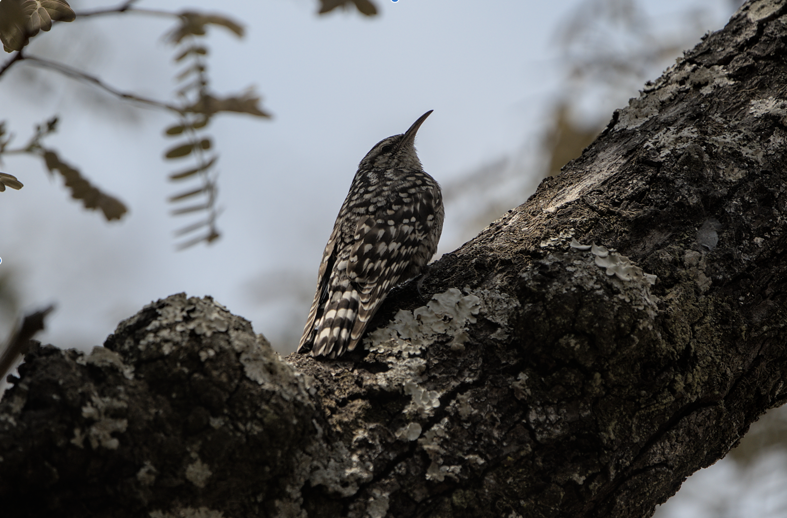

Salpornis salvadori
|  | Kingdom Phylum Class Order Family Genus Species |
Animalia Chordata Aves Passeriformes Certhiidae Sapornis Salvadori |
The African spotted creeper is a small passerine bird, which is a member of the subfamily Salpornithinae of the treecreeper family Certhiidae. It is found in sub-Saharan Africa in open deciduous forest and mango groves. It does not migrate other than local movements.
description
The plumage is a dull brown, dotted all over with white spots. They are indeed passerine having 3 toes forward and 1 toe backwards.They have a medium length bill.
behaviour & call
a 2 noted whistle given while perched. The African Spotted Creeper will spend a lot of its time crawling up the bark of tall trees. They will fly from one tree to the other. They fly from the top to the bottom of the other tree and then start climbing upwards.